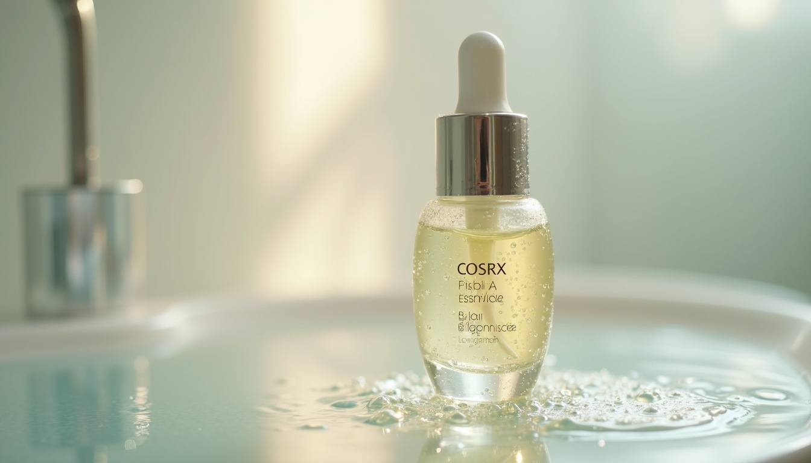

Most women notice the changes before they connect them to hormones. Skin that used to be balanced suddenly feels tight and flaky in winter. Products that worked for years start stinging. Fine lines appear where there were none.
This isn't ageing in the generic sense. It's oestrogen withdrawal, and it has a specific mechanism.
Oestrogen stimulates collagen synthesis. As levels begin fluctuating and declining in perimenopause, the skin's structural scaffold loses its main production signal. The epidermis thins. The skin barrier — the outermost lipid layer that keeps moisture in and irritants out — becomes compromised. Sebum production drops. Skin that was once oily or combination shifts toward dry and reactive.
What you're left with is a skin barrier under stress: less able to hold hydration, more permeable to irritants, slower to recover from inflammation.
The fix isn't more product. It's the right architecture.
Why Korean Skincare Is Uniquely Suited to This Moment
Korean skincare wasn't designed around anti-ageing marketing. It was built around the concept of 피부 장벽 (pibu jangbyeok) — skin barrier. The entire layered routine logic (essence → serum → moisturiser) exists to systematically restore what a compromised barrier loses: moisture, lipids, and protection.
This maps almost perfectly onto what perimenopause skin needs. Where Western skincare tends toward active ingredients (retinols, acids, vitamin C), Korean formulations tend toward humectants, occlusives, and skin-identical ingredients — things that support rather than challenge a barrier that's already under strain. For many women in perimenopause, switching from an active-heavy routine to a barrier-first routine is the single most impactful change they make.
The Four Products That Matter
Snail Mucin Essence — The Barrier Foundation
COSRX Advanced Snail 96 Mucin Power Essence is probably the most clinically justified K-beauty product you can buy. Snail secretion filtrate contains glycoproteins, hyaluronic acid, and allantoin — all compounds with documented effects on barrier repair and wound healing.
For perimenopause skin specifically: snail mucin promotes fibroblast activity (the cells responsible for collagen and elastin production) and supports the natural moisturising factor (NMF) that barrier damage depletes. It's not a retinol — it won't stimulate collagen the way prescription options do — but it creates the moisture-rich, low-irritation environment in which compromised skin can recover. It goes on second, after cleansing and toning, patted gently into damp skin.
Toner Pads — Gentle Resurfacing Without the Sting
The skin cell turnover rate slows during perimenopause, partly due to declining oestrogen's role in keratinocyte regulation. Mild chemical exfoliation helps. The problem is that most exfoliants — AHAs, BHAs, retinoids — are too aggressive for a compromised barrier.
Anua Niacinamide 5 + TXA Toner Pads use niacinamide (a B3 derivative with strong evidence for barrier support, pore appearance, and uneven tone) alongside tranexamic acid for brightening — neither of which is an irritating acid. The pad format provides light physical exfoliation without friction. Once daily is enough.
Mugwort Essence — Calm the Reactive Phase
If you're in the phase where skin is reacting to things it never reacted to before — new breakouts, persistent redness, sudden sensitivity to products you've used for years — this is the inflammatory component of barrier dysfunction, not a skin type change.
Anua Heartleaf + Mugwort Calming Essence contains mugwort (artemisia) — one of the most studied soothing ingredients in Korean dermatology. It's an anti-inflammatory, not a treatment. It doesn't fix the barrier, but it reduces the irritation load while the barrier is being restored. Layer it after the toner pads and before the snail mucin, or use it as a standalone calming step on reactive days.
Gua Sha + Jade Roller — The Lymphatic Reset
This one is less biochemistry and more ritual — but ritual matters for stress regulation, which affects cortisol, which affects skin inflammation. A jade roller and gua sha set used consistently in the evening stimulates lymphatic drainage, reduces morning puffiness (which increases as oestrogen drops and fluid regulation shifts), and provides the kind of slow tactile ritual that activates the parasympathetic nervous system.
The technique matters more than the tool. Use upward strokes on the face and downward strokes on the neck, always moving toward lymph nodes. Refrigerate the roller for an additional vasoconstricting effect on puffiness.
The Simple Routine
1. Gentle cleanser (no foaming sulphates)
2. Toner pad — Anua niacinamide pads
3. Snail mucin essence — pat onto damp skin
4. SPF 50 — non-negotiable; oestrogen's photoprotective effect decreases in perimenopause
1. Oil cleanse + gentle second cleanse (double cleanse)
2. Mugwort calming essence (if skin is reactive; otherwise skip)
3. Snail mucin essence
4. Richer moisturiser or sleeping mask
5. Gua sha — 3–4 minutes, working from centre outward and upward
What to Skip
The perimenopause skin barrier is already compromised. Aggressive actives — high-percentage retinoids, AHAs above 8%, vitamin C serums above 15%, chemical peels — often make things worse before they make them better. This isn't forever. As the barrier stabilises (and if you're on HRT, as oestrogen levels stabilise), you can reintroduce them. For now: fragrance-free, barrier-first, low-stimulation. Korean skincare's logic was built for this.
"Hormone replacement therapy (HRT) addresses the root cause of perimenopausal skin changes — oestrogen decline. Topical skincare addresses the symptoms. If you haven't had a conversation with your doctor about HRT, it's worth having. The two approaches are complementary, not either/or."
Frequently Asked Questions
Korean skincare is particularly well-suited to perimenopausal and mature skin because of its barrier-first philosophy. The layering routine — toner, essence, serum, moisturiser — systematically restores what oestrogen decline depletes: moisture, lipids, and the skin's natural protective function. It's less reliant on aggressive actives than Western regimes, which makes it gentler on skin that has become reactive or sensitive.
Oestrogen stimulates collagen synthesis and supports the skin barrier. As levels decline in perimenopause, collagen production slows, the epidermis thins, sebum production drops, and the skin barrier becomes compromised. Practically, this shows up as dryness, increased sensitivity, fine lines appearing faster, and products that previously worked suddenly causing irritation.
Retinol can be beneficial during perimenopause for stimulating collagen production, but it needs to be introduced carefully because the skin barrier is often already compromised. Starting with a low concentration (0.025–0.05%) every third night and building up gradually reduces the risk of irritation. If skin is highly reactive, stabilise the barrier first before introducing retinoids.
Ingredients with the strongest evidence for perimenopausal skin: hyaluronic acid (hydration), niacinamide (barrier support, tone), snail secretion filtrate (barrier repair, fibroblast stimulation), ceramides (lipid barrier restoration), and broad-spectrum SPF (essential as photoprotection decreases). Prescription topical oestrogen is also effective but requires a doctor.
The 3am Protocol
Ready to fix your sleep architecture?
28 days of circadian resets using Korean saenghwal practices and sleep science. No melatonin required.
Learn more →
Amazon Associate links — I earn a small commission at no extra cost to you.
Some links in this article are Amazon Associate links. If you purchase through them, I earn a small commission at no extra cost to you. I only link products I'd genuinely recommend.